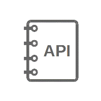

ESP-IDF Programming Guide¶
This is the documentation for Espressif IoT Development Framework (esp-idf). ESP-IDF is the official development framework for the ESP32 chip.
 |
 |  |
| Get Started | API Reference | H/W Reference |
 |
 |
 |
| API Guides | Contribute | Resources |